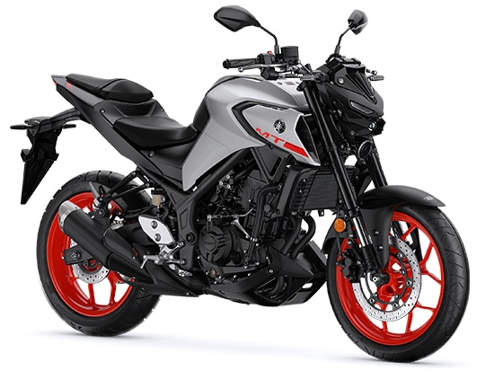
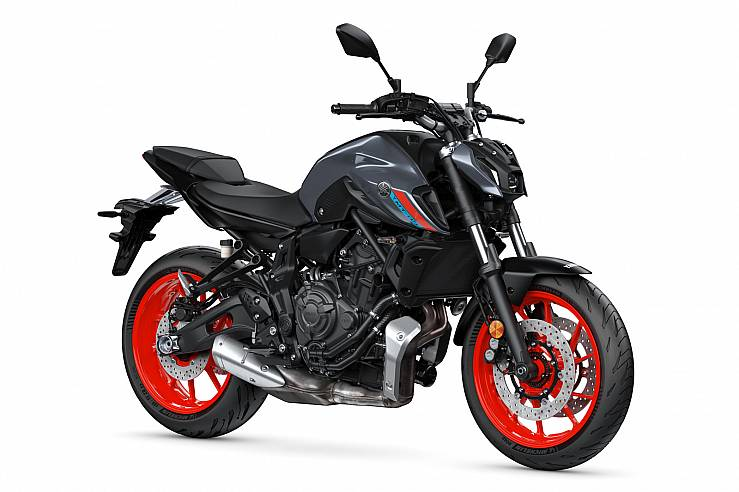
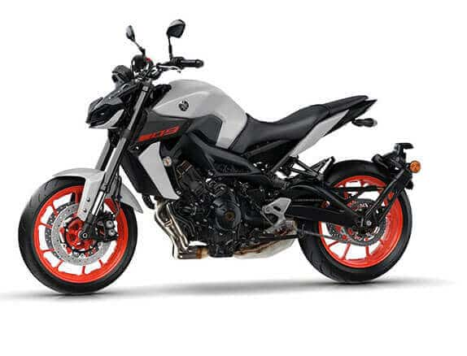

MT-03
 La Yamaha MT-03 monta el mismo motor que la Yamaha R3, un bicilíndrico en línea de 321 cc. con inyección electrónica, con 8 válvulas (cuatro por cilindro) y sistema de refrigeración DOHC. El motor de la MT 03 entrega una potencia de 42 CV a 10.750 rpm y un par motor máximo de 29,6 Nm a 9.000 rpm, lo que asegura una buena aceleración y velocidad máxima.
MT-07
 El nuevo motor la Yamaha MT 07 sigue montando el ya contrastado bicilíndrico de 689 cc CPS y refrigeración líquida. Pierde algo de potencia respecto a l versión anterior y entrega ahora una potencia de 73,4 CV a 9.000 rpm y un par motor máximo de 67 Nm a 6.500 rpm, cumpliendo la normativa Euro5.MT-09
 El nuevo motor tricilíndrico CP3 de 890cc con cigüeñal crossplane entrega una potencia de 119 CV y un par motor máximo de 93,0 Nm a 7.000 rpm. Con estas cifras esta moto naked de Yamaha 2021 dispone de una excelente aceleración y una velocidad máxima que supera los 240 km/h.MT-10
 La nueva Yamaha MT10 entrega una potencia máxima de 158 CV a
11.500 rpm y un par motor máximo de 111 Nm a 9.000 rpm. Su nivel
de aceleración desde bajos o el nivel de potencia en altas rpm
ofrece una excelente velocidad máxima solo limitada por su
protección aerodinámica.
La nueva Yamaha MT10 entrega una potencia máxima de 158 CV a
11.500 rpm y un par motor máximo de 111 Nm a 9.000 rpm. Su nivel
de aceleración desde bajos o el nivel de potencia en altas rpm
ofrece una excelente velocidad máxima solo limitada por su
protección aerodinámica.